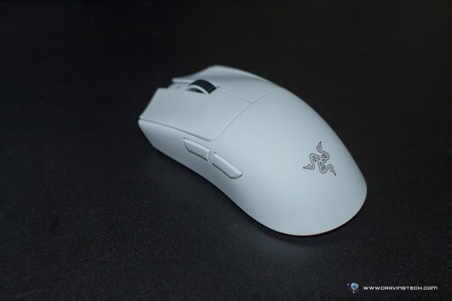

El Razer Viper V3 Pro esun ratón inalámbrico para juegos de esports de alto rendimiento y ultraligeroCon un peso de tan solo 54 gramos, incorpora un avanzado sensor de 35 000 DPI, una tasa de sondeo de 8000 Hz y 8 botones programables. Diseñado para jugadores profesionales.